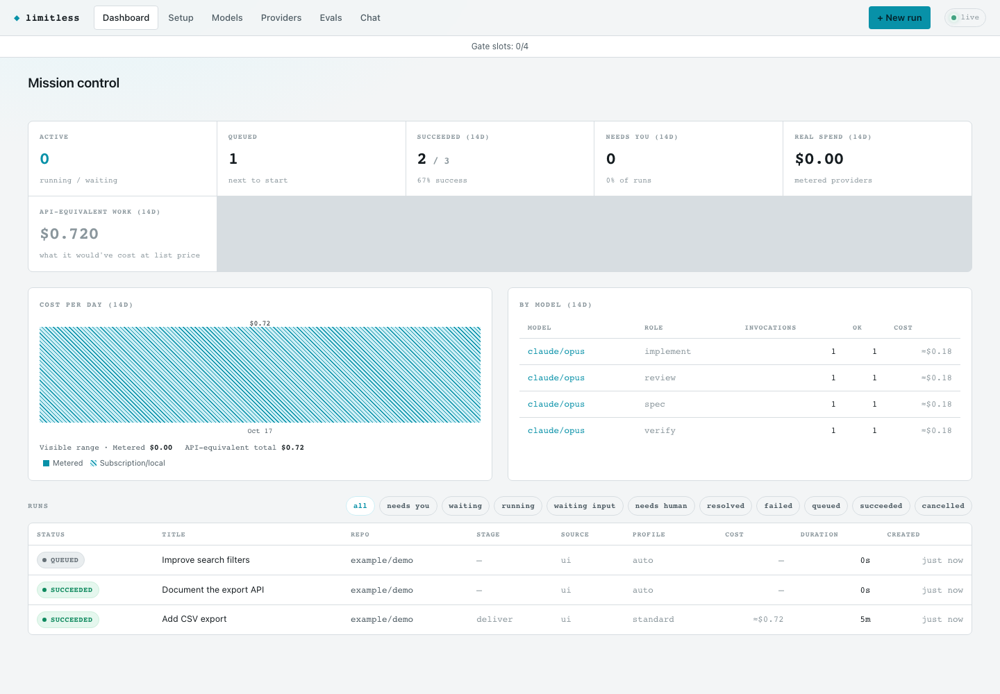
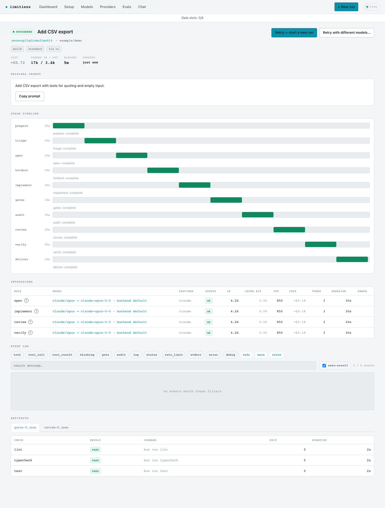
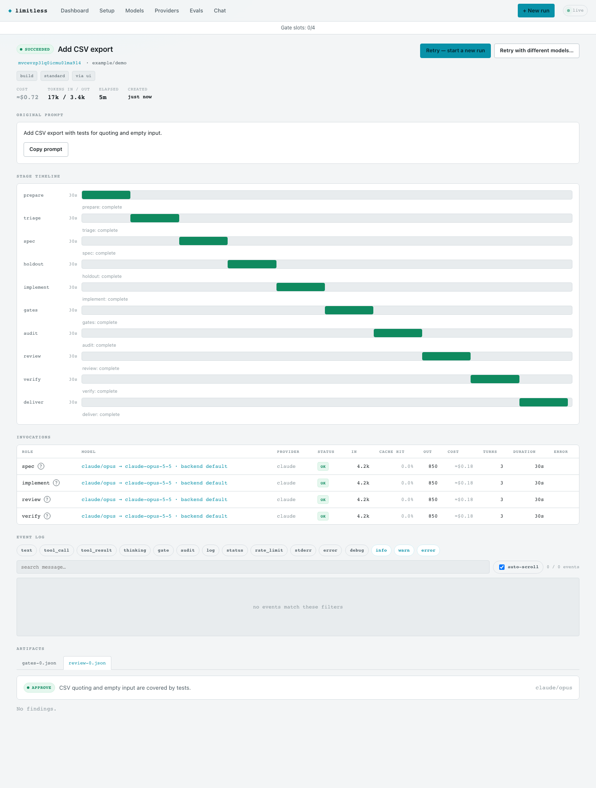
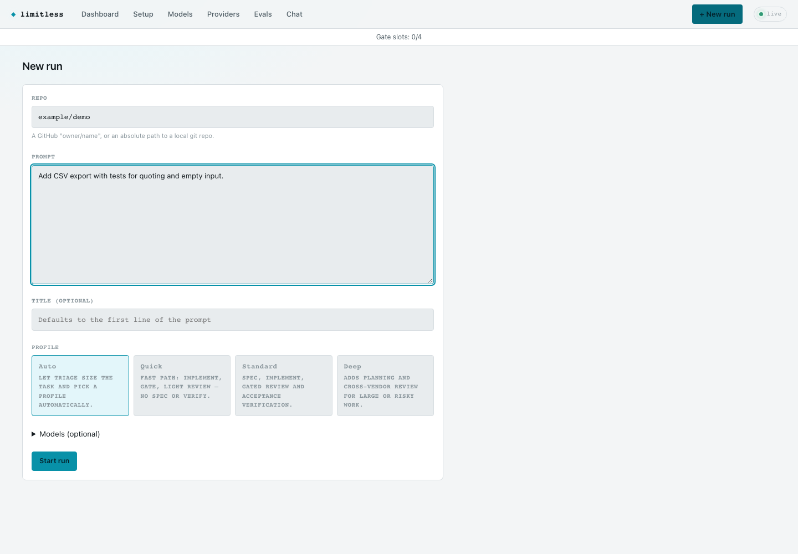
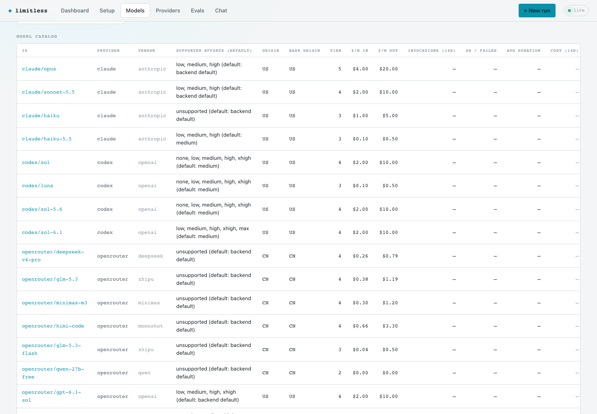
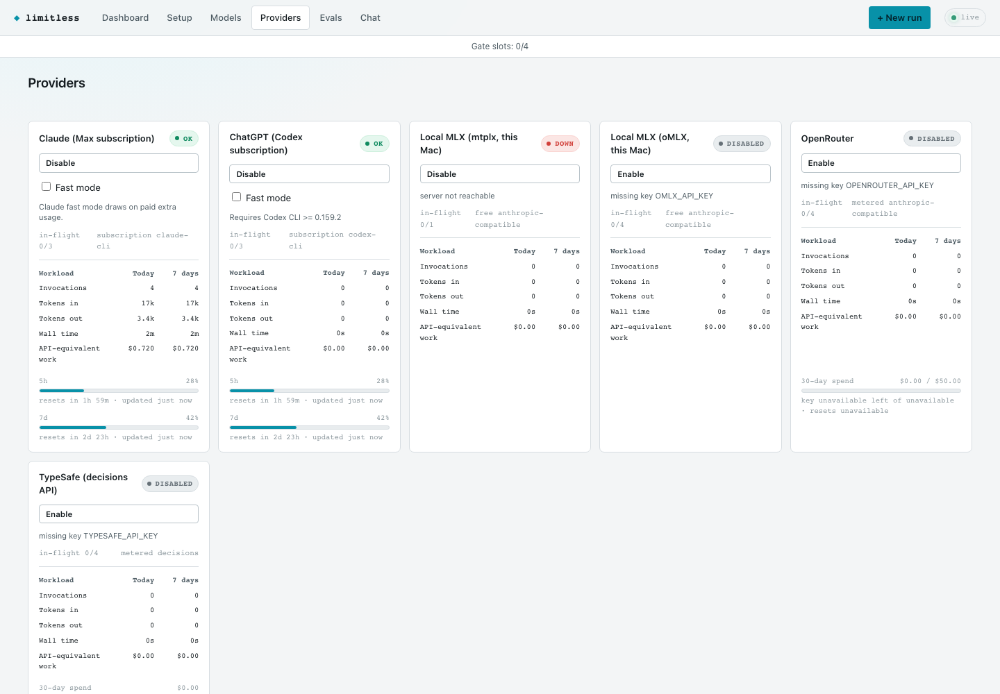
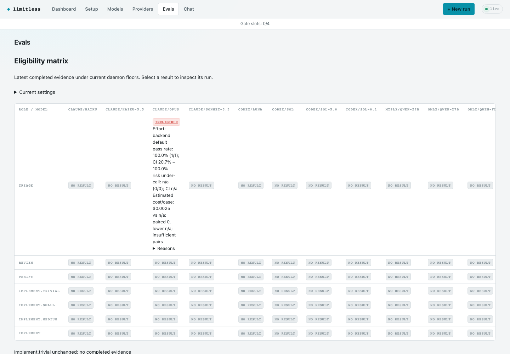
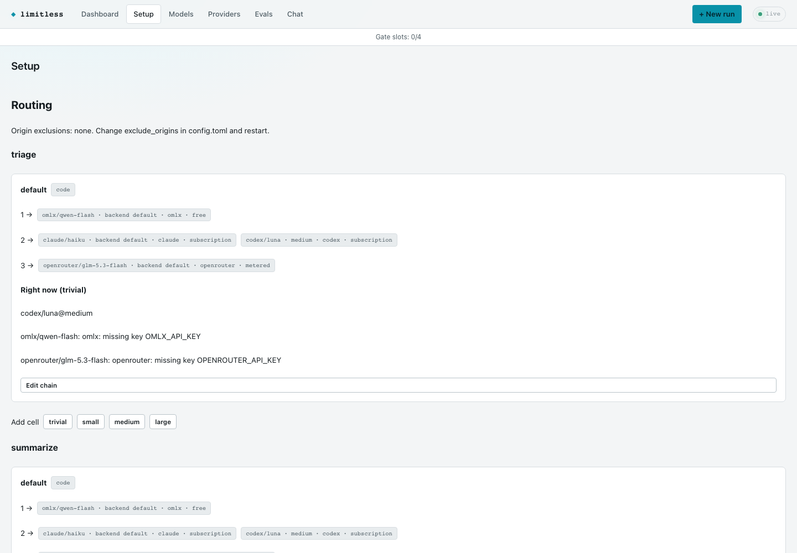

Follow every run
Live runs, a queue, quota gauges and spend in one dashboard.

Your request. A working pull request.
Give Limitless a request and a repository. A deterministic pipeline plans, implements, verifies and delivers the change, with models working inside stages.
Route work across Claude and ChatGPT subscriptions, OpenRouter and local models. Production gates and Claude editors use macOS confinement; service management uses launchd.
Install Limitless Explore the design ↗How a run works
prepare → triage → (clarify) → spec → implement ⇄ gates · audit · review · verify → deliver
Start in a fresh worktree with baseline checks. Define acceptance criteria, implement the change, then check it with gates, a deterministic diff audit, adversarial review and separate acceptance verification. Failed checks feed back into implementation.
Profiles set the depth: quick skips spec, holdout and verify; standard and deep include a holdout author working in parallel with implementation.
Mission control
Live runs, a queue, quota gauges and spend in one dashboard.

Stage timelines, invocations, gates, reviews and per-model cost explain the result.


Choose a repository and profile, describe the change and submit a run from the UI.

Inspect model tiers, vendors, prices and supported reasoning efforts.

See provider health, subscription windows and metered spend.

Evaluate models and generate a routing policy from measured results.

Inspect effective routing chains and change role-specific model choices.
